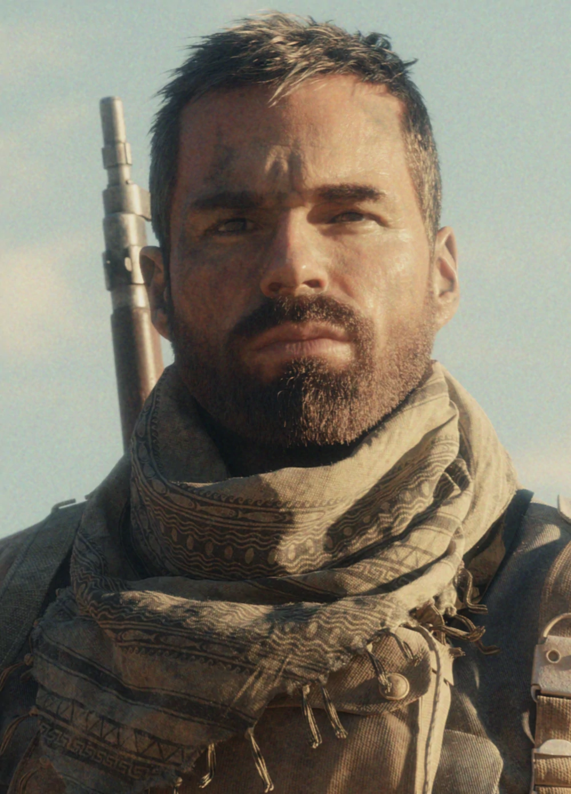

CHARACTER INFORMATION

LLucas Riggs prefers actions over words, and although his personality is far from explosive, his method of dealing with threats is highly combustible.A child of sheep farmers just outside Melbourne, Australia, Riggs worked with his family to tend the herd and collect wool. When World War II began, he didn’t hesitate to sign up before conscription was even implemented. He was ready to see more of the world and fight a greater evil than the occasional petty mobster in his area.
Riggs can be described as an enigma – he would not take offense to this distinction, as he understands people just as much as others understand him. Ultimately, Riggs is the definition of passion within a soldier. Valuing his fellow squad mates and country above all else, he wants to show the world what Australians are made of.
To his allies, Riggs is a gentle giant, often being the life of the party, but not one to seek the spotlight. To his enemies, Riggs is an intimidating and brutal warrior of honor. He stands up to wrongdoers and those who start conflicts with blunt force, ironically done via his specialty within the Australian Army: explosives.
In 1944, Lucas was still locked up in a prison in Tunisia, where he would meet Carver Butcher. Lucas refused to speak to Butcher, citing his hatred of the British and also under the belief that he was there to kill him under orders from Hamms. Butcher, who deliberately got himself arrested to recruit Lucas to a special forces team, attempted to appeal to him, stating that he shouldn't rot away in prison over punching his superior (even if he had it coming).
Lucas still did not want to join, so Butcher bid him luck on his court martial, saying "accepting their punishment means they win."
Thinking about what he said through the night, Lucas gave in, revealing to Butcher that he had a key pocketed to escape since his imprisonment. Lucas and Butcher make their way to the cafeteria, where they assault the guards and blow up a wall to escape, cementing Lucas's status as a member of Task Force Vanguard.